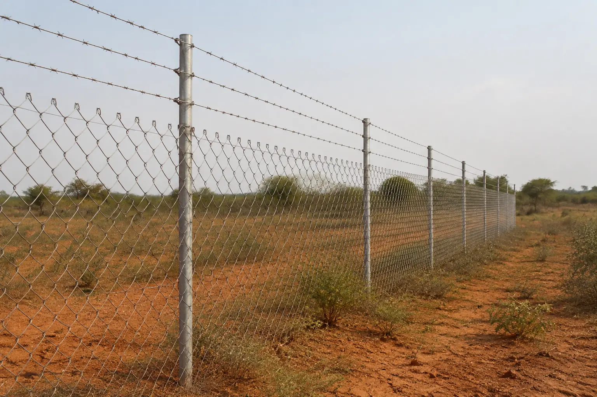
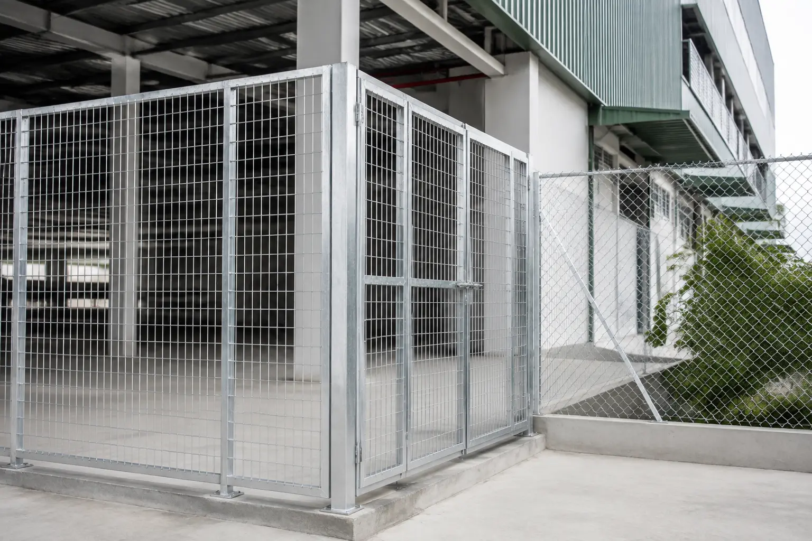
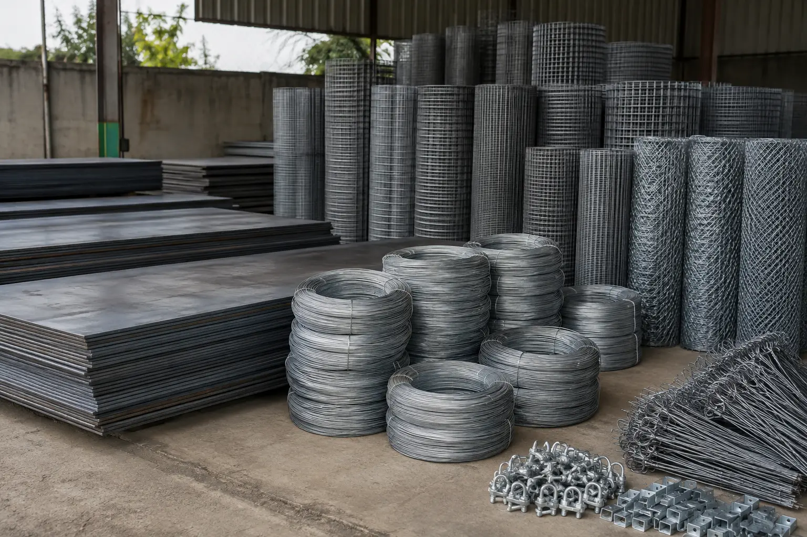

Naga Steels
Steel, GI and MS sheets, plate, wire, mesh, roofing, nails, bolts, rope and related material supply.
View the complete rangeSteel distributor · Wholesaler · Metal supplier · Est. 2002
Naga Steels supplies metal products for fabrication, construction, roofing, industrial, agricultural and contractor requirements. Naga Fencing is our dedicated fencing brand.
Madurai · South Tamil Nadu delivery enquiries
Complete product offering
Naga Fencing
Sheets & plate
Wire & rope
Mesh
Roofing
Fasteners & hardware
VNC product brands
Relevant VNC enquiries include Bestfence fencing systems, Bestwire wire products, Bestarc welding electrodes and Voltwire electric-fence products. Product availability and current manufacturer specifications are confirmed during quotation.
Explore the VNC product rangeBrand structure
Steel, GI and MS sheets, plate, wire, mesh, roofing, nails, bolts, rope and related material supply.
View the complete rangeThe dedicated name for chain-link variants, barbed wire and fencing-related manufacturing and supply.
Explore Naga FencingServices & delivery
Clear scope, usable buying details and delivery planning—without treating material supply, civil work and installation as the same thing.
Manufacturing enquiries reviewed by wire size, mesh opening, height, length and quantity.
GI wire and sheets, MS sheets, wire mesh, weld mesh, barbed wire, coated sheets and related hardware.
Drawings, BOQs, reference photos and line-item schedules help convert a general request into a usable quotation.
Purchasing unit, quantity, address, vehicle access and required date are reviewed before delivery is confirmed.
South Tamil Nadu delivery enquiries
Named service areas now match the business listing and extend through key southern commercial routes. Every dispatch is still confirmed against material, quantity, route, access and unloading.
View delivery detailsMadurai · Sivakasi · Rameswaram · Thoothukudi · Tirunelveli · Theni · Virudhunagar · Ramanathapuram · Dindigul
Sivaganga · Rajapalayam · Kovilpatti · Tenkasi · Nagercoil and Kanyakumari
Choose by application
Compare fencing and material options for agricultural, industrial, warehouse, residential, solar and contractor requirements.

Boundary material choices for farms, plots and agricultural land around Madurai.
View application
Perimeter, separation and protective-mesh requirements for factories and industrial property.
View application
Material for property boundaries, internal separation and protective storage areas.
View application
Project-based boundary material for solar and infrastructure locations.
View application
Straightforward fencing choices for plots, compounds and privately owned land.
View application
Specification-led material enquiries for fabrication, fencing and project execution.
View applicationProduct detail pages
Open a product to see the key buying details, then share the size, quantity and delivery location for a useful quotation.
Manufactured
→02Supplied
→03Supplied
→04Supplied
→05Supplied
→06Supplied
→07Supplied
→08Supplied
→09Supplied
→10Supplied
→Since 2002
Naga Steels combines fencing manufacturing with the trading and supply of steel, GI products, mesh and related materials.
The right material.About Naga Steels
The right specification.
A dependable supply relationship.
Buying guide
The right fencing depends on the property, security requirement, budget and expected service life.
Chain-link fencing provides a continuous mesh boundary and is commonly considered where visibility and full perimeter coverage are required. Barbed-wire fencing is generally considered where economical boundary demarcation is the priority.
Wire mesh and welded mesh can also support industrial partitions, protective enclosures and fabrication applications.
For a quotation, share the required material, dimensions or wire specification, quantity and delivery location.
Questions before an enquiry
Naga Steels is based in Madurai, Tamil Nadu. The supplied business artwork lists 124, Chitrakara Street, Madurai – 625 001. Please confirm this is still the current customer-facing address before visiting.
The range includes GI and MS sheets, steel plate, GI and steel wire, steel wire rope, wire and welded mesh, roofing sheets, steel and concrete nails, bolts, chain-link fencing, barbed wire and related hardware. Availability depends on the required specification.
Naga Fencing is the dedicated Naga Steels brand for chain-link, coated chain-link, heavy-duty fencing, barbed wire and related boundary-fencing requirements.
Send the product, dimensions or wire specification, approximate quantity and delivery location. A drawing, bill of quantities or reference photo can also help explain the requirement.
Naga Steels manufactures chain-link fencing, supplies steel, GI and mesh products, reviews specification-led material enquiries, and coordinates dispatch and delivery requirements order by order.
Delivery enquiries are accepted across Madurai and South Tamil Nadu, including Dindigul, Theni, Sivaganga, Virudhunagar, Sivakasi, Ramanathapuram, Rameswaram, Kovilpatti, Thoothukudi, Tirunelveli, Tenkasi, Rajapalayam and Nagercoil/Kanyakumari. Every route remains subject to order and logistics confirmation.
Direct enquiry
Product · dimensions · quantity · delivery location
Request a quotation